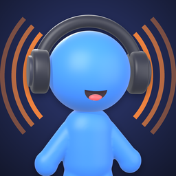

Política de Privacidade, Termos de Uso e Suporte
Última atualização: 19 de outubro de 2026
Idioma: Português · English · Español
Este documento descreve como o aplicativo Tuno: Rádios do Mundo (“aplicativo”, “app”, “nós”) trata seus dados (Política de Privacidade), as regras para usá-lo (Termos de Uso) e como pedir ajuda (Suporte). O Tuno é um aplicativo para ouvir rádios da internet a partir de um mapa, desenvolvido por JotaJr. Ao instalar ou usar o aplicativo, você concorda com este documento.
O aplicativo funciona sem cadastro e sem conta. Não pedimos seu nome, e-mail, telefone nem dados de pagamento, não usamos a localização (GPS) do seu aparelho e não temos servidor próprio: não recebemos nem guardamos dados seus. Suas favoritas, seu histórico e suas preferências ficam apenas no seu aparelho. Para encontrar e tocar as rádios, o app se conecta a alguns serviços de terceiros, e o app é gratuito porque exibe anúncios do Google AdMob, não personalizados. Tudo isso está descrito abaixo.
Esses dados não são enviados a nós nem a terceiros.
Para funcionar, o app se comunica diretamente com os serviços abaixo. Como em qualquer acesso à internet, cada um recebe o endereço IP da sua conexão e dados técnicos básicos (por exemplo, o nome e a versão do app). Nenhum deles recebe seu nome ou e-mail.
As coordenadas enviadas são as do ponto que você escolhe no mapa, e não a localização do seu aparelho.
Não coletamos nome, e-mail, telefone, localização do aparelho (GPS), contatos, fotos, áudio do microfone nem dados financeiros. O app não tem contas de usuário e não usa ferramentas de análise de uso. No iPhone, o app não pede permissão para rastrear você entre apps e sites de outras empresas.
Não vendemos dados pessoais. Como não temos servidor, não temos dados seus para compartilhar; o envio aos serviços do item 3 acontece direto do seu aparelho, para o app funcionar e para exibir os anúncios.
O app exibe um banner na tela do mapa e, só se você escolher, um vídeo em Config (“Apoie o Tuno”). Os anúncios são fornecidos pelo Google AdMob e não são personalizados com base no seu perfil. Onde a lei exige (por exemplo, na União Europeia e no Reino Unido), o app pede o seu consentimento antes de exibir anúncios. Você pode redefinir ou limitar o identificador de publicidade nas configurações do aparelho (Android: Configurações > Google > Anúncios; iPhone: Ajustes > Privacidade e Segurança > Rastreamento e Publicidade da Apple).
O aplicativo não é direcionado a crianças e não coletamos dados de menores de 13 anos. A programação das rádios é de responsabilidade de cada emissora e pode não ser adequada a todas as idades.
Os dados guardados no aparelho ficam lá até você apagá-los: em Config, “Limpar ouvidas por último” apaga o histórico; desinstalar o app apaga tudo. Os serviços de terceiros, inclusive o Google AdMob, guardam dados conforme as suas próprias políticas.
As comunicações com o catálogo, o mapa e a busca de lugares usam conexão segura (HTTPS). Algumas emissoras só oferecem áudio por conexão comum (HTTP); nesse caso, o app recebe apenas o áudio da rádio, sem enviar dados seus.
Nos termos da Lei Geral de Proteção de Dados (Lei nº 13.709/2018), você tem direito de acessar, corrigir e excluir seus dados. Como os dados do app ficam apenas no seu aparelho, você pode exercer esses direitos diretamente, limpando o histórico ou desinstalando o app. Para dúvidas ou solicitações, fale conosco em jotapereirajunior@gmail.com.
Podemos atualizar esta Política. A data de “Última atualização” no topo indica a versão vigente.
Dúvidas sobre privacidade? Escreva para jotapereirajunior@gmail.com.
Ao instalar, acessar ou usar o Tuno, você concorda com estes Termos de Uso e com a Política de Privacidade acima. Se não concordar, não use o aplicativo. Se você baixou o app pela App Store, também vale o Contrato de Licença de Usuário Final padrão da Apple.
O Tuno é um guia para ouvir, pela internet, rádios que já transmitem publicamente. O app não produz, não controla e não é dono das transmissões: ele apenas encontra as rádios no catálogo aberto Radio Browser e toca o áudio direto do servidor de cada emissora.
Concedemos a você uma licença pessoal, limitada, não exclusiva, intransferível e revogável para usar o aplicativo para fins pessoais e não comerciais.
O app é gratuito e exibe anúncios de terceiros (Google AdMob). O vídeo de “Apoie o Tuno” é sempre opcional. Não nos responsabilizamos pelo conteúdo dos anúncios nem pelos produtos anunciados.
Ouvir rádio pela internet consome dados: uma rádio em 128 kbps usa cerca de 58 MB por hora. O consumo no plano de dados da sua operadora é de sua responsabilidade.
O aplicativo, o nome Tuno, o personagem Tuno, a identidade visual e o código são do desenvolvedor (JotaJr) ou de seus licenciadores e são protegidos por lei. Estes Termos não transferem a você nenhum direito de propriedade intelectual.
O aplicativo é fornecido “como está” e “conforme disponível”, sem garantias de qualquer tipo. Não garantimos que alguma rádio estará disponível ou que o serviço será ininterrupto e livre de erros.
Na máxima extensão permitida em lei, não nos responsabilizamos por danos indiretos, incidentais ou consequenciais decorrentes do uso ou da impossibilidade de uso do aplicativo, incluindo a perda de dados guardados no aparelho.
Podemos alterar estes Termos. O uso do aplicativo após as alterações representa a sua concordância com a versão vigente.
Estes Termos são regidos pelas leis da República Federativa do Brasil. Fica eleito o foro do domicílio do usuário para resolver eventuais controvérsias, quando aplicável.
Dúvidas sobre estes Termos? Escreva para jotapereirajunior@gmail.com.
Encontrou um problema, tem uma sugestão ou uma rádio está errada? Escreva para jotapereirajunior@gmail.com contando o modelo do aparelho, a rádio e o que aconteceu.
A transmissão da emissora pode estar fora do ar ou instável. Gire o dial ou use os botões − e + do rádio laranja para tentar outra rádio do lugar. Confira também se você está conectado à internet.
Muitas rádios do catálogo não informam onde ficam. Por isso o app procura perto do ponto, depois no estado, numa área maior e, por fim, no país inteiro. Em lugares sem rádios cadastradas, tente uma cidade próxima ou use a aba Buscar.
Toque no coração da rádio, na lista da Buscar ou em Favoritas. Suas favoritas e as ouvidas por último ficam na aba Favoritas.
Na aba Config: o “Timer para dormir” pausa a rádio depois do tempo escolhido, e “Tocar ao abrir o app” faz o Tuno voltar para o lugar da última rádio e tocá-la.
Na aba Config, escolha a cor e os acessórios (chapéu, óculos e cachecol). Toque no Tuno para ele acenar.
Não. As rádios são transmitidas pela internet, então é preciso estar conectado (Wi-Fi ou dados móveis). Sem conexão, o Tuno fica triste e avisa; quando a internet volta, ele procura a rádio de novo sozinho.
Os anúncios mantêm o Tuno gratuito. Eles não são personalizados. Se quiser ajudar, toque em “Apoie o Tuno” em Config para ver um vídeo curto.
Aviso: este documento foi elaborado para o aplicativo Tuno: Rádios do Mundo e não constitui aconselhamento jurídico.